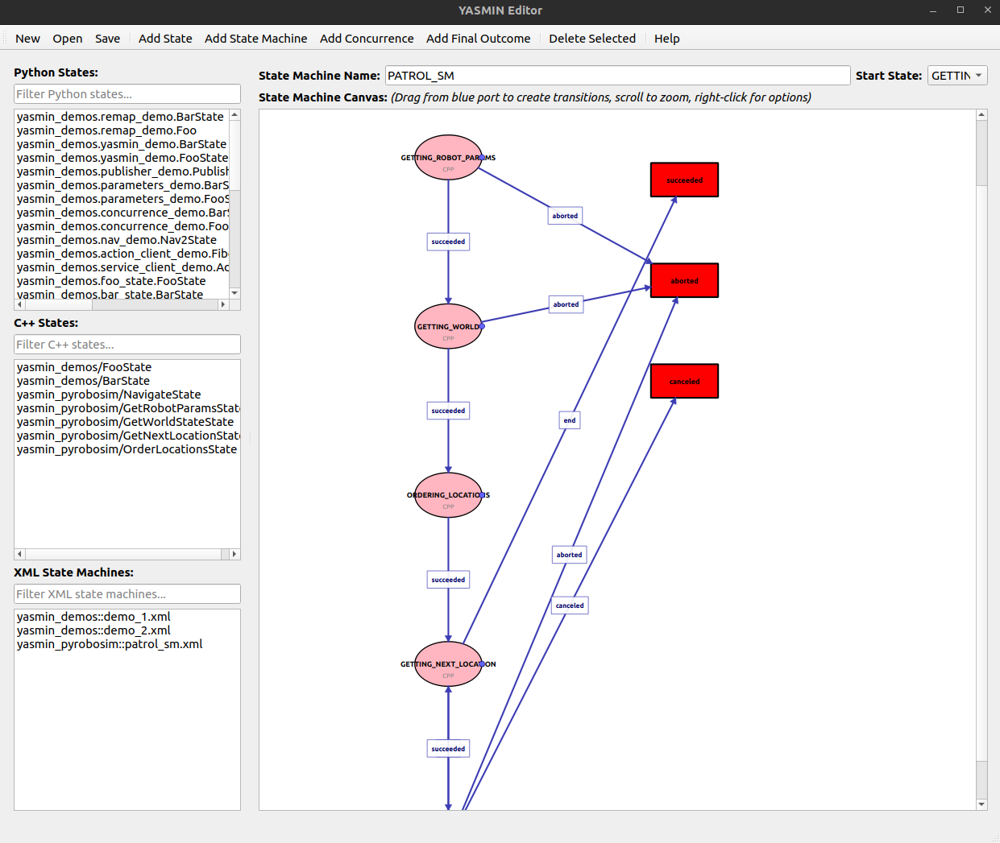

YASMIN Editor
The YASMIN Editor is a graphical user interface application for building YASMIN state machines using state plugins. It enables intuitive creation of state machines through drag-and-drop functionality, allowing you to:
- Load Python and C++ states
- Load XML state machines
- Define transitions between states
- Create outcomes
- Visualize state machine structure
State machines can be exported and saved in XML format for reuse and sharing.

Getting Started
The YASMIN Editor provides a visual interface for creating state machines through an intuitive drag-and-drop workflow. It's designed for both rapid prototyping and production development, offering features like:
- Visual design: Build state machines by dragging states onto a canvas
- State library: Browse and search available Python and C++ state plugins
- Connection editor: Create and modify transitions between states visually
- Property inspector: Configure state parameters and outcomes
- XML export: Save your state machines in standard YASMIN XML format
- Live validation: Catch errors and invalid configurations as you design
To launch the editor, run the following command:
ros2 run yasmin_editor yasmin_editor